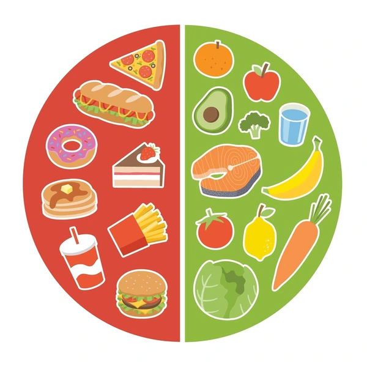

La dieta de los famosos
La comida es una de las cosas culinarias mas importantes en la vida de una persona. Es por eso que los famosos han decidido compartir sus dietas para que los demás puedan seguirlas y mejorar su salud, n necesitas gastar una fortuna ya que estas dietas te diran el secreto que necesitas saber.
